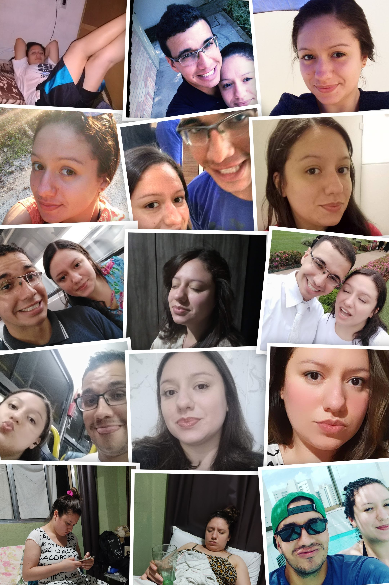

Este ano foi desafiador. Passei por uma cirurgia no joelho, e você começou a buscar respostas para as dores intensas que sentia. Descobrimos que era a sua vez de "entrar na faca".
Passamos por algumas situações complicadas: troquei de equipe, troquei de turno, e as coisas se tornaram incertas.
Mas também foi neste ano que estivemos mais com nossas famílias e amigos. Vimos um deles se casar, e tivemos diversos momentos memoráveis.
Bom, é isso... mais um ano juntos, com o coração unido e em harmonia com o evangelho em nossas vidas, colhendo os frutos de tudo o que plantamos ao longo desses 9 anos.
Que venham mais anos ao seu lado e que, juntos, possamos atingir nosso pleno potencial e formar a família que tanto almejamos e trabalhamos para ter.
